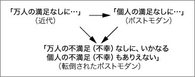

|
前回筆者は富の二極化、つまり「人生の勝ち組」（生産）と「人生の負け組」（消費）の亀裂について論じたが、これがいまもまだ発展途上にあり、今後もますます亀裂を深めていくであろうといった気の滅入る話ばかりに終始し、状況打開へのヒントをいささかも提示しなかったことに対して不満を抱かれた読者もおられるに違いない。似たような不満は実は筆者の大学の授業でもときおり耳にすることがあり、たとえば学期末に行われる「授業評価アンケート」の講師へのコメントでは「先生は俺たちに死ねというのか」みたいな抗議をしてくる学生がいつも決まって出てくる。匿名アンケートの性質上、筆者はこうした非難をおこなう学生に対し抗弁する機会は与えられないが、それでも仮にもしそれが許されるならば、その際ビートルズの「ヘイ・ジュード」の一節を出してこちらの真意を伝えようと試みるだろう――「Hey Jude / Don’t make it bad / Take a sad song / And make it better」。周知のようにこの曲はポール・マッカートニーがジョン・レノンと別れた妻シンシアの子ジュリアンを激励するため作った歌だが、これを目下の筆者と学生との関係に無理矢理ねじまげて解釈するとさしずめ次のようになる――「ねえ君 / 他人に八つ当たりするのはよくないよ / （君の置かれた絶望的社会状況についての僕の）歌を聴いてごらん / そうしたら気持ちも少しは晴れるってもんだよ」。こうした説明が学生を納得させるかどうかはむろん定かではないが――これを学生が皮肉と受け取れば逆に火に油を注ぐことになろう――それでも「悲しい歌」が聴く者を逆に勇気づけるという心理的事実を否定することはできない。もちろんこの事実から「楽しい歌」が「悲しい歌」ほどには人を勇気づけないと早急に結論付けることはできないし、ましてや筆者のように「楽しい歌」を全面排除するのはいくらなんでもやり過ぎだと思われるかもしれないが、実はこの「楽しい歌」の排除という行為は筆者の個人的気質によるものでもなければ、この連載が独自に掲げる思想でもない。むしろ筆者に言わせれば、それはいま我々の置かれた状況そのものであり、「楽しい歌」を唱おうとしないのは筆者個人だけではなく、筆者を含むこの時代を生きる我々すべてである。
そもそも「楽しい歌」とはいかなる曲を指すのか？ モー娘が唄うような曲は確かに人を楽しい気分にさせる。だが我々がここで論じている「楽しい歌」はあくまで「悲しい歌」の対極にある歌、すなわち絶望的社会状況の彼岸にあるユートピアの実現への願いを込められた歌であり、〈今〉を刹那的、逃避的に満喫するだけのカラオケソングとは厳密に区別してとり扱うべきものである。しかもこのユートピアは、その実現の暁には我々すべてが幸せになれる――でなければユートピアとは言えない――という点でカラオケボックス的密室とは空間的に相容れぬものである。たとえば「世界が一つになることを想像してごらん」と謳う「イマジン」は、作者が凶弾に倒れたニューヨークのセントラルパークでみんなで唱和してこそ意味のある曲であり、カラオケボックスで酔いにまぎれて唄うものではない。ところがあの同時多発テロ（「９．１１」）が起きて以来、周知のように、アメリカではこの曲をみんなで唄うどころかひとりで聴くことすら許されぬ風潮になっており、「世界は一つ」という言葉はいまや「アメリカ主導のもと」（「Pax Americana」）という但し書きのつかない限り口に出してはならぬタブーとなってしまった。幸い日本ではそうした全体主義的風潮はいまのところ見られないが、ただ、これが我々の健全な平和への意志の表れかというとそうではなく、「楽しい歌」を当人以外は誰も聴かないカラオケソングと錯覚するという、全体主義とは逆の断片主義、非連帯主義に傾いている点では、アメリカよりもユートピアからさらに遠のいているのかもしれない。定義上、「状況」とは万人が参加する公の場所であり、そこで唄われるべき「楽しい歌」も当然そこにいる者すべてが共有できる歌でなければならない。前回の結論の末尾に記したラカンの言葉「万人の満足なしに、いかなる個人の満足もありえない」はその意味で「楽しい歌」の究極の歌詞であり、誰もが耳を傾け同時に誰もが人目を憚ることなく口にすべき言葉である。ところが現実には「人は何をしても私は自分の人生が大事」（註：麻薬中毒を克服したスーパーモデルナオミ・キャンベルの言葉）といった意味の歌詞ばかりがもてはやされ、他者の幸福への配慮は他人のカラオケを聴くのと同じくらい「ウザイ」行為とみなされがちである。奇しくもここで話は堂々めぐりの循環論法となる。すなわち、他人の（偽りの）「楽しい歌」をウザく思う我々によって構築されるこの社会を我々は（万人の満足よりも個人の満足が優先されるという）絶望的社会状況と受け止め、これを「悲しい歌」にして嘆き悲しむことで気を紛らわそうとするわけである。
ただ、しかしながら冒頭にも述べたように、今日我々がむしろ直面する問題は、「楽しい歌」どころか「悲しい歌」さえも唄えない人間がかつてなく増大し、希望と絶望の循環（「上を向いて歩こう / 涙がこぼれないように」）がこれまでのような未来のユートピアに向けた「右肩上がり」の発展（「近代化」）としてはもはや捉えられず、それどころか循環を繰り返せば繰り返すほどさらに淵なしの沼に落ちていくデフレスパイラルとして、希望と絶望のどちらとも無縁の感受性がそれ自体として高く評価される（ポストモダンと我々が呼ぶ）社会が到来していることである。これを先ほどの筆者に食ってかかってきた学生たちに照らして言えば、彼らが筆者に腹を立てたのは、なにも筆者が彼らを絶望の淵に突き落とそうとしたからというよりは、すでに絶望の淵をはいずり、にもかかわらずそこを安息の地として受け入れる彼らの麻痺した感覚を筆者が逆撫でしたからであろう。絶望がまさに絶望であるがゆえに希望をもたらすという近代的逆説をそもそも持たない彼らに対して絶望的なことを述べるのは、喩えは悪いが目の不自由な人間に向かって「この美しい絵を見てごらん」と言うようなものである。いやこの比喩は正確ではない。ポストモダンの今日、もしかしたら目が不自由なのはむしろ我々近代人のほうであって、希望と絶望の悪しき弁証法を超克したと自負する彼らの目に映る我々は、この「人生の日曜日」（コジェーブ）が訪れた今もなお毎日アリのように無為な仕事に明け暮れ、それでいて何も報酬を得ることのない哀れな人間たちである。しかも筆者のように彼らに余計な口出しをし、ポストモダンの正当性に疑義を差し挟もうとする人間は、この心地よいまでに退屈な社会の転覆を企てる体制破壊主義者ということになり、これに身の危険を感じた学生が筆者に抗議するのも理に適っている。ただ身の危険を感じるということは、彼らがまだクラスの多数派を占めるには至っていないことでもあり、くわえてポストモダンが教義上いかなる連帯行動も奨励しないことを鑑みれば、かつて哲学者アドルノがそうされたように殺気立つ学生に取り囲まれ胸ぐらを掴まれるような事態になることは当分は起きないかもしれない。だが油断は禁物である。ポストモダン主義者は徒党を組まない代わりにストーカーやネット荒らしといった単独のゲリラ戦術にはすこぶる長けている（ちなみに筆者はこのどちらの被害にも遭っている）。くだんの授業評価アンケートにしても、学内法規上、教師本人以外の誰も読むことはできないとはいえ、筆者の勤務するような経営の厳しい私立大学では内容如何によっては上層部にも簡単に伝わりうることを頭に入れた行為だったのかもしれず、大学がいまも近代主義の牙城であるとはいえ、そこにあぐらをかくことがもはや許されぬ状況であることだけは確かである。
それはともかくとして、今述べた安息の場所としての絶望の淵とは具体的にいかなる心的情景を指すのか？ それは経済学の言う「底」のようなものだろうか？ なるほど人を陰鬱にさせる点ではそうともいえるが、ただそれだけだと安息の側面が抜け落ちてしまう。経済をインフレとデフレの相互循環作用として捉える従来の見方でいくと、安息は景気が「底入れ」したあとに必ずやってくるはずのものであり、「底」自体に一息つける要素もなければ居直る根拠もない。近代人にとって希望とは、いわば「今『底』にある危機」からの脱出への意志であり、またそれは近代の至上道徳として、脱出を諦めようとするいくじなしたちに叱咤鞭撻の意も込めて敗者あるいは負け犬の烙印を押すものであった。近代が「啓蒙」という表現手段をとるのはまさにそのためであり、およそ近代人であろうとする者はおのが生徒としての未熟さを常に心に弁え、この近代という「未完のプロジェクト」（ハーバーマス）に向けた絶え間ない前進に努めなければならない。ところが前回論じたように、今日のポストモダン社会において「今そこにある危機」は、危機は危機でも対岸の火事（「今あそこにある危機」）としてしか認識されなくなっており、メディアが喧しく騒ぎ立てる「経済危機」にしても、彼らが煽れば煽るほどこちらがさらに鈍感になる仕組みとなっている。アメリカのように国民の多くが株を所得している国ならまだしも、日本のように自分の預貯金が上がりもしなければ下がりもしない国民の場合、ことさら「未曾有の経済危機」と煽られても実感が湧くはずもなく、それこそ極端な話、当人以外のすべての日本人が失業したとても本人が職にありついてさえいればとりあえず安泰であるのだ。ともかく、この「人は何をしても私は自分の人生が大事」という人の道としてあってはならぬ考え方が、これまでの近代的価値観を揺さぶる新たな実践道徳として我々の心を蝕みつつあることだけは間違いなく、バブル期の標語「赤信号、みんなでわたればこわくない」の誘惑に屈し、いまもその代償を支払い続ける我々にとって新たな標語となるべき言葉は、信号が「赤」であれ「青」であれ他人の目など気にせずわが道を歩くことであり、またそれこそが我々を安息の場所へと導いてくれるものかもしれないのだ。
とはいえ、あらゆるものが二極化されつつある今日、安息の場所もやはりその例外ではなく、いまや二つの人種として隔離政策下に置かれた「人生の勝ち組」と「人生の負け組」がそれぞれに歩む道も目的地も天と地ほどの差が広がりつつある。ただ、どちらが「青」でどちらが「赤」かとなると事はそう単純ではなく、見方によって「青」にも「赤」にも見えてしまうのが近代的善悪の超克されたポストモダンの交通規則である。たとえば世界最大の億万長者ビル・ゲイツは、少なくとも法律上は青信号の横断歩道をわたっているが、法律あるいは法律を作る国家自体が実は彼とグルだとすれば、信号とはしょせん我々残りすべての者たちが負けるようにあらかじめ仕組まれた出来レースのルールでしかなく、法を守るまっとうな市民であればあるほど馬鹿を見る結果となる。これまでの近代的見方でいけば、そもそも市民社会とは資本主義という競争社会を「弱肉強食」や「適者生存」ならぬ公正で成功へのチャンスだけは均等なものにするルールを共有する者たちが構成するところの社会であり、ゲイツがあれほど成功できたのも元はといえばこの制度のおかげなのだが、それでも我々がどこかそれに釈然としないのは次のような疑念がなおも抜きがたく残るからである。確かにゲイツは掛け値なしにゼロから頂点を極めた人間であり、そのこと自体は我々も高く評価せねばならない。だが出来レースを広い意味に捉え、そもそも何のためにレースを行っているのかを考えてみると、詰まるところ誰が勝者になろうと主催者側の体制にとって唯一大切なのは（パチンコ店のオーナーなら誰でも知っていることだが）一握りの勝者をオトリにして残りすべての敗者から金をしこたまむしりとることであり、またその際、勝者があらかじめ用意された「サクラ」であるよりは本物の我々の隣人であるほうが我々も自分の敗北を納得しやすい(*1)。ゲイツがあの巨大多国籍企業マイクロソフトの「ビル・ゲイツ会長」であることを除けば我々と何ら変わらぬ普通の（しかもどちらかと言えばさえない）おっさんであることを我々は文字通りに受け取る必要がある。彼はプログラマーとしても起業家としても天才だったかもしれないが、天才は「勝ち組」の受け皿に入りきれないぐらい世の中にごまんといるのも事実であり、しかも「勝ち組」のすべてが天才であるとは限らない(*2)。前回触れた映画『グッド・ウィル・ハンティング』は、二極化を天才と凡人という非常に分かりやすい図式で示すことによって、凡人の我々観客にこれを自然かつ公正な成り行きと受け止めさせようと目論むものであったが、この図式を一旦受け入れてしまうと、我々に残されたことは、もはや「勝ち組」たちの躍進ぶりをイチローのヒットに歓喜する観客と同じく、ただただ（テレビの画面越しに）「まるでわがことのように喜ぶ」だけとなる。ただその際我々もこちらの譲れぬ条件として、「勝ち組」に属す人間が一つの点で我々よりも抜きん出ている点以外はすべて我々と同じ嗜好や性向の持ち主であることを要求し、あちら側もあちら側でこのことを踏まえた上でのイメージアップに努めている。たとえばクリントン前アメリカ大統領は、大統領時代マクドナルドのハンバーガーをホワイトハウスに宅配させて話題を振りまいたりしたが、こうしたある種の親しみやすさは「勝ち組」への感情移入というポストモダン時代における「イデオロギー国家装置」（アルチュセール）を有効かつ円滑に機能させるために何よりも役立つものであり、事実、我々はこの親しみやすさゆえに、彼らの非に余る富と権力の貪りぶりを「ちょっとした人格上の欠点」とばかりに簡単に許してしまうのである。
こうした我々の救いがたいまでのお人好しさ加減は（かつてヘーゲルはこれを最大の皮肉を込めて「美しい心」と呼んだ）、しかしと言うべきかだからこそと言うべきか、二極化ポストモダン体制の維持に寄与貢献するという点で今日もっとも評価される美徳の一つとされており、くだんの学生たちにしてもこの他ならぬ美徳の立場から筆者に異議申し立てしてきたのであろう。これまでの（＝近代の）美徳といえば「批判精神」であり、なかでも近代をその極北にまで推し進めたマルクス主義のそれは「存在するあらゆるものに対する情け容赦のない批判」(*3)であった。ところがベルリンの壁の崩壊によって近代の下部構造たる資本主義の無謬性が「証明」された今日、これまでのように物事をあくせく批判したりすることはまったく無意味とは言わないまでも、資本主義という「鉄の法則」それ自体を疑うことは少なくとも時間の無駄とみなされ、しかもこのロジックをさらに推し進めて「あらゆるもの」がこの法則の応用問題に過ぎないと結論付ければ、物事への疑義は情報処理能力に秀でた官僚やＭＢＡビジネスマンら一部のエリートたちに任せて、残りの人間はただひたすら「人生の日曜日」を満喫していればよいだけとなる。ともかくこれを先ほどの信号の話とつなげると、たとえば今多くの二流、三流（と呼ばれる）大学で進行している学級崩壊の問題の根っこにあるのはなにも少子化による学生の質の低下といったことではなく、むしろこれら「上位３０校」（遠山プラン）から漏れた大学に入った時点で進んで自分に「負け組」の烙印を押した学生たちが、この「負け組」専用の横断歩道（しかも信号は「青」である！）をそれなりに楽しく歩いているだけなのかもしれず、そうなると筆者のように教師を将来への夢を売るサービス業と任じる者は、もうそれだけで「負け組」という「夢」を実現し安息を手に入れた学生にとって迷惑なまでに場違いな人間ということになる。これがにわかに信じがたいとお思いの読者は試しにエリート養成大学と非エリート養成大学の両方に出向いてキャンパス風景を見比べてみるとよい。こと笑顔の数に関していうならばその差は歴然である。一流大学に落ちた失意の学生がしぶしぶ通うというかつての二流、三流大学の光景はこれら二つの中間のいわゆる一．五流大学には今もみられるかもしれないが、少子化のあおりで誰でもそこそこ勉強すれば一流大学に入れる時代に、「蛍雪」（＝浪人）を堪え忍んでまで一流大学にこだわれるほど目の前の安息への誘惑を絶ち切れる者がそうたくさんいるはずもなく、事実、断ち切れない者たちが一斉に集う場所が今日の二流、三流大学なのである(*4)。
もちろんここまで身も蓋もない言い方をされると学生のほうも黙っておらず、「何を好きこのんでこんなクソ大学に来るものか」などと反発してくるかもしれないが、それを言うならこちらも「だったらもう一度受け直せばいいじゃないか。受験で失敗するようでは君の将来もたかが知れている」と逆に言い返してやりたいところだ。ただ、むしろここでポイントとなるのは、将来への希望を絶たれた若者が自暴自棄に毎日授業という名の余暇（レジャー）に明け暮れるといったことではなく、むしろこうした近代的挫折・屈折ルートがポストモダンの到来とともにいわば交通整備され、その結果、自暴自棄に毎日余暇に明け暮れるためにあえて将来への希望を絶つという転倒した（あるいは観念論哲学のいう「内省化」された）ロジックが公然とまかり通るようになったことであり、しかもここで強調しなければならないのは、これが二極化をさらに加速させる点で体制側にとっても都合がよいということである。我々はここで消費主義という今日の規範的実践哲学をいま再び思い起こす必要がある。そこで前回述べたことを繰り返すと、消費主義の美徳としての価値はなによりも衝動買いにあり、逆に賢い消費は悪徳として所得減税や地域振興券その他あらゆる消費活性化政策によって社会からの駆逐、撤退を迫られている。いや賢い消費はまだいい。今日最大の悪徳は金を箪笥にしまい将来への備えにまわすことのほうであり、とくに筆者のような「ＤＩＮＫＳ」（ダブルインカム・ノーキッズ）で、貯金の必要はないが仕事の忙殺でなかなか金を散財することのできない人間は、へたすると「景気」という名の公共秩序への配慮に欠けた反社会的人間とみなされかねない。それはともかく、衝動買いがいまや公然とお上から「あっぱれな行為」と褒めはやされる時代に、いまだ教育現場においては学生の将来の芽を摘むという昔ながらの教育的見地から衝動買いの心的等価物である自暴自棄を改めさせようというのはどうみても理不尽な話であり、大人の偽善にとりわけ敏感な子供たちが混乱してさらに自暴自棄になったとしても我々に彼らを責める資格などなく、それにまた偽善を見抜けないような鈍感な「よい子」や優等生にかぎって欲と腐敗にまみれた出世街道をぬくぬくと歩いていくことを考えれば、まだしも自暴自棄な学生たちのほうが健全といえるのかもしれない。
ところで、今述べた内省化のロジックは、実はよく観察すれば教育現場にかぎらずあらゆる人間活動の裾野に及ぶものであり、「本末転倒」はいまや我々がこの「終わりなき日常」（宮台真司）を生きる唯一の動機付けとして機能しているとすらいえる。「万人の満足なしに、いかなる個人の満足もありえない」というかつて普遍性を持ち得た理念が今や「近代的」という限定詞なしには使えなくなってしまった今日、我々がとりあえず裏声で掲げうる理念は（「人生の勝ち組」たちのように）「万人の満足の犠牲なしに、いかなる個人の満足もありえない」とは言わないまでも、せいぜい「個人の満足なしに、いかなる万人の満足もありえない」といったぐらいのものであろう。ただ、言うまでもなくこのポストモダン理念は、解釈次第によってまったく正反対の結果をおよぼしうるものであり、「万人の満足」に奉仕するものともなれば、「万人の満足の犠牲」を強いるものともなる。前者のほうが数も具体例も乏しいのでまずそちらから説明すると、たとえば最近のスポーツ選手（甲子園球児、等々）がよく試合を振り返って言う言葉に「ゲームをよく楽しめた」というものがある。もちろんその裏にある意図は、楽しむことがスポーツの本質であり意義であるというよりは（だったら甲子園など目指さず草野球をやっていればよい）、それが自分の能力を最大限に引き出すことでチームの勝利に貢献し、さらに観る者を励ますという利他主義に基づいたものであり、だからこそ選手の笑顔は結婚式で「わたし絶対幸せになります」と声高らかに宣言する花嫁と同様、我々観る者にある種の感動を与えるわけである。ただ、しかしながら、こうした満足のあり方は、実践的にも理論的にも当人の意向とは裏腹に逆の結果、つまり「万人の満足」の奉仕どころか「万人の満足の犠牲」を強いる危険を常に矛盾としてはらんでいる。というのも、もし「個人の満足」が「万人の満足」によってのみ正当化されうるものだとすれば、今自分が楽しんでいるプレーがそもそも楽しむに値する価値かどうかを自分では判断できないことになり、ただ、それにもかかわらず、まず自分が楽しまなくては他者からの審判が下されようがないとすれば、彼はこの法廷におもむくためにまず自分を楽しませることからはじめなければならない。もちろんこうした強制は彼の楽しみを大いに削ぐ行為であり、しかも楽しむことが本来の目的である以上、彼はこの強制をできるだけ排し他人への配慮を無視した徹底した自己陶酔に努めなければならない。ようするに、万人を満足させるためには、まず自分が満足しなければならず（「個人の満足なしに、いかなる万人の満足もありえない」）、しかも自分が満足するためには、万人の満足が犠牲にならなくてはならない（「万人の満足の犠牲なしに、いかなる個人の満足もありえない」）。
先ほど「個人の満足なしに、いかなる万人の満足もありえない」という理念が数も具体例も乏しいと述べた理由もここでおのずと明らかとなる。万人の満足を犠牲にしてまで自分の満足にこだわれるほどわがままで、しかもそれでいて万人を満足させることの出来る人間がそうざらにいるはずもなく、またたくさんいたらいたでこちらとしても困る。ともかく、それは究極的に次のことを示唆する。すなわち、我々「万人」は「人生の勝ち組」という名の「個人」を必要としており、後者が楽しめば楽しむほど我々も満足する仕組みとなっている。だがこの仕組みが維持されるためには、個人が万人の中に埋もらない程度に少数でなければならず、「人生の勝ち組」は常に例外として存在しなければならない。しかもこの例外は我々万人が望むという意味で特権的例外であり、またそれは、我々が「その他大勢」（＝人生の負け組））の中への埋没を実は心の底で望んでいることと相関関係にある。こうした埋没への意志は、ただ逆説的ながら、個人の自意識をたまたま高めた結果そうなるのであって、結束や連帯といった集団意識によってそうなるのではない。喩えるならそれはお隣北朝鮮の「チュチェ思想」（主体思想）のようなもので、そのロジックの根底にあるのは、主体的であればあるほど全体主義になるという逆説であり、しかもそのおかげ我々は本来ならば「勝ち組」にしか許されない「万人の満足の犠牲なしに、いかなる個人の満足もありえない」という理念を「負け組」なりに実行に移すができるのだ。
では、それが実際にどういうものか「勝ち組」のそれと比較してみると、「負け組」も個人の名のもと他人を犠牲にしてまで楽しみに耽れるという点では「勝ち組」と同じである。ただ後者と異なる点は、楽しむ「主体」が自分自身であるとしても、楽しむ対象は万人と同じものでなければならないことであり、具体例を出せば、それは最近のテレビゲームのようなものである。たとえばロールプレイング・ゲーム（ＲＰＧ）で遊ぶとしよう。その際、我々は「個人の名において」、つまり主人公キャラクターに我々個人の名前を付けることで、あたかもそれが自分のためだけに作られたゲームのように振る舞うことができるが、もちろんそれはただの幻想に過ぎず、そのことは本人自身よく弁えている。ただし、ゲームを最大限に楽しむという「快感原則」のもとでは、それは客観的事実でありながらも建前上の認識程度にしかならざるをえず、逆に主人公の振りをするという虚構的事実のほうが本音の認識として彼の「主体」の座を占めることとなる。ともかく、こうした名前の個別性を除けばゲームソフトの売れた数だけ同じ顔で大量に出回る「主体」を、にもかかわらず本人が「万人」の一人として認識することを拒否するとしたら、それこそまさに「万人の満足の犠牲」ということになるが、ただそれもまた「主体的」（＝主観的）認識の機能でもあり、かくしてこのポストモダン版「チュチェ思想」（あるいは最近巷で問題となっている「ゲーム脳」と言い換えてもよい）は出口のない円環をひたすらグルグル回り続けることとなる。
――と、ここまで絶望的な話ばかりに終始してきたが、それでもおそらく思慮深い読者であれば、筆者がこうした諸々の困難な問題への解決策とは言わないまでも、少なくとも処方箋だけはすでにはっきりと提示したことをご理解いただけたはずである。ともかくこれをもう一度繰り返すと、今日我々が抱えるあらゆる問題の根底にあるのは「万人の満足なしに、いかなる個人の満足もありえない」という理念の単純なまでの放棄である。もちろんこう書くと、「だったら、この理念をなんとかして取り戻せばよいじゃないか！」と先走る読者も出てこられるかもしれないが、そうした声はすぐさま「そんなことデキるわけないだろ！ それに取り戻すといったって、肝心の理念自体、これまで一度も実現された試しなどなかったじゃないか！」といったヤジや怒号によってかき消されることだろうし、そもそも、このかき消されたあとの小春日和の静寂が今まさに我々が生きているポストモダンという名の「人生の日曜日」なのだ。そうしたなか、つまり「何かをしなければならない」という義務それ自体が失われた環境のなかで我々がやれることといえば、せいぜいこの「人生の日曜日」がそもそも日曜日の名に値するかどうか、それが真の満足に値するものかどうかを自分自身の名において判断することぐらいである。
とはいえ、いましがた論じたように、その答えもまた我々の楽しい余暇を乱さぬよう、すでに前もって用意されており、我々が「自身の名」という「主体思想」に基づいて判断しようとするかぎり、それが「真の満足」であることに疑いの差し挟みようはない。我々は北朝鮮による拉致被害者たちの変わり果てた洗脳ぶりを見てまるで他人事のように哀れんでいるが、自分のことを棚に上げる余裕を持つ点では実は彼らよりも過酷な思想改造を受けているのかもしれない。それに洗脳をあえて否定しなければならないほど毎日の生活に困窮していない我々は、北朝鮮人の窮乏ぶりを哀れみながらも自分たちには「万人の満足」がかなりの程度かなえられていると内心悦に浸ってもいる。もちろんここでいう「かなりの程度」とは、「満足」の度合いというよりは「万人」の地理政治学的（geopolitical）範囲、いや縄張りであり、実際に餓死の危機に直面している北朝鮮やアフガニスタンの民衆や自国内の被生活保護の母子家庭やホームレスたちは最初から「万人」の範疇から除外される。その証拠に、我々は同時多発テロで殺された「我々のヒーロー」たちには同じ「万人」の一人として怒りと悲しみの涙を惜しみなく流せても、ソマリアの荒れ果てた村でただ死を待つばかりのハエにたかられた栄養失調児に対してはせいぜい「人道支援」や「難民援助」といった普段使い慣れない言葉をよそよそしく（それもテレビ画面越しに）吐く程度であり、国内の隣近所にいる（二極化の波に溺れた）「経済難民」にいたっては、そうした言葉すらない――あるとすれば「自業自得」ぐらいか！――のが現状である。
ともかくこのように考えていくと、それが「万人の満足なしに、いかなる個人の満足もありえない」であれ、その反対の「個人の満足なしに、いかなる万人の満足もありえない」であれ、実現の困難な点において我々がそのどちらともほど遠い場所にいることは確かなようである。その意味でも今日、いや明日を象徴する事件は、同時多発テロや拉致問題よりは、むしろ世界の首都米国ワシントンＤＣでいま起きている無差別市民ライフル狙撃殺人事件のほうである。筆者がいま書いている時点で犯人はまだ特定されていないが、犯人がテロ組織のメンバーというよりは、素性を怪しまれない程度に平凡な、つまり我々「万人」の一人という筆者の予想を前提に論を進めていけば、この想像上の犯人は上記の二つの二律背反理念をある意味最悪のかたちで「止揚」したとみることもできる。分かりやすい図式で示せば、それは以下のような弁証法プロセスを辿ることになる――

この不可解で不条理な定言の持つ意味がもし分かりにくければ、単純にいまワシントン市内のあらゆる公共の場所で死の恐怖におびえている市民の立場に身を置いてみるとよい。彼らがライフル銃の標的にさらされていることに「身に覚えがある」のは、なにも人の恨みを買うようなことをしでかしたからではなく、ただ単に彼らが善良な一市民、ひいては「万人」の一人だからである。しかしなぜ「万人」でなければならないのか？ これを理解するには、この定言が「個人の不満足（不幸）なしに、いかなる万人の不満足（不幸）もありえない」というもう一つの論理上の可能性としてはありうる定言ではないことを押さえる必要がある。たとえば、かつてケネディー大統領が暗殺されたとき、我々「万人」はそれをまるで自分の家族の死のように嘆き悲しんだものだったが、もし仮に同じことがブッシュ大統領や小泉首相に起きた場合、我々はかつてと同様の悲しみに打ちひしがれることができるだろうか？ もしできるとしたら、いまも要人暗殺は起こっているはずだが実際には起きておらず、またそうである以上、この定言の実効性はいまや失われたものとみて差し支えなく、これをひとつの論理的帰結として証明することもけだし可能である。上の図式に照らせば、この定言は「万人の満足なしに」の否定形として働くことになるはずだが、実際に後者を否定、いや転倒したのはそれではなく「個人の満足なしに……」というポストモダン理念である。ようするに、止揚が「個人の不満足なしに……」ではなく「万人の不満足なしに……」となるのは、止揚が直接的にはポストモダンの否定もしくは転倒のかたちをとるからであり、しかもこのポストモダン社会が全体として否定される兆しのまだない今日、それが否定ではなく転倒となるのは理の当然である。
だが、そもそもどうしてこのような転倒、いや止揚が起こりうるのか？ 理由は簡単である。それは、なによりも「個人の満足なしに、いかなる万人の満足もありえない」というポストモダン教義が個人の満足しうることを前提条件としており、結果的に不満足に終わった者に対してはいささかの配慮も示さず、また示す必要もないことを教義として公認しているからである。ただし、そこには自己矛盾もはらまれている。すなわち、それは一方において「個人の満足」という権利を各個人に与えながらも、他方において、教義の本来的性質上、各個人に「個人の満足」という義務を強いるものとなり、教義を守ることのできない者は極端にいえば犯罪者とみなされる。しかもその際、それを守ろうとして守れなかったか、それとも最初から守るのを放棄したかは、審判する側にとってなんら情状酌量の対象とはならず、事実、ワシントンの狙撃殺人犯であろう人物、もしくは昨年起きた大阪の池田小殺傷事件の宅間守被告がどのような個人的経緯で犯行に至ったかについては、ことその動機が「個人の満足」の失敗であるかぎり、刑を重くすることはあっても軽くすることは絶対にありえない。もちろんこのことは本人自身が誰よりもよく承知していることだろうし、実際、宅間被告が犯行動機について「自分の人生がどつぼにはまるなら、道連れが欲しかった」（２００２年７月２５日、大阪地裁第１２回公判での被告人質問）と述べたのも、犯行のはるか以前に「個人の満足」が失敗した時点ですでに自分が犯罪者であることを認識していたからであろう。それにどうせ罰を受けるのなら、「個人の満足」の失敗への潜在的リスクを抱えている点では彼となんら変わらぬ見ず知らずの他人、つまり我々「万人」のなかの誰かを「道連れ」にするほうが少しは気持ちも楽になろうというものだ。もちろんそれは彼の犯罪を正当化することにはならないし、むしろこうした不埒な理由で罪のない子供たちの命を奪った彼を我々は断罪にして然るべきである。ただ、それでもここであえて強調しなければならないのは、たとえ「どつぼにはまる」ことと実際に犯行に走ることとの間の病理的飛躍を常人であれば決して飛び越えることはないにせよ、「どつぼにはまる」こと自体は誰しもに起こりうることであり、しかもそれを罪として認識することは、狂気どころか社会的に正しい振る舞いだということである。そもそも諸悪の根元は、明らかに「個人の満足なしに、いかなる万人の満足もありえない」という我々の倫理にある。なのに、「個人の満足」の実現に成功した人間に対してはそれを褒めそやし、不幸にも失敗した人間に対しては社会の除け者にするか犯罪に駆り立てて社会から葬り去るしかしないのは、よく考えてみれば理不尽な話である。
もちろんこう書くとただちに次のような反論が出てくるだろう――「では我々に一体どうしろと言うのか？ 諸悪の根元を断ち切ることで解決できるのならこちらも喜んでそうしよう。だが仮に私一人がそうしたところで皆全員が同じことをしなければ何も意味はないではないか？」。まったくそれはおっしゃる通りである。だがそれこそまさに筆者がこれまで論じてきた「内省化」、本末転倒化の罠であり、虚無主義的実践の放棄こそがこのポストモダンという全体主義体制を（北朝鮮のように上からではなく）下から支える「主体思想」の究極的機能ではないのか？ こうした反論の行き着く果てが、ワシントンをはじめいまや世界のあらゆる場所で常態化しつつある「万人」同士の相互不信や相互監視、ひいては「万人の不満足（不幸）なしに、いかなる個人の不満足（不幸）もありえない」がすべての人間の心を司る社会の到来でしかないのは、いまや火を見るよりも明らかである。もちろん、これを良い意味での「光明」（啓示）と受け止め、「もっと光を！」（ゲーテ）とさらなる真理（という名の絶望）の探究に向けて邁進することも正しい「主体」のあり方として可能ではあり、またそれは筆者の主張「我々は『救済』にすら値しない」の倫理的正当性を裏付ける意味でこちらにとっても都合の良い話ではあるのだが…………。
註
*1 この考え方を究極まで突き詰めた数少ない思想家のひとりノーム・チョムスキーは、あるインタビューのなかで、「この資本主義モデルにとってかわる別の（経済）モデルがあるとお考えですか」という質問に対し、次のように答えている――
そもそも、資本主義なんてどこにもありはしません。すくなくとも、純粋な市場経済という意味での資本主義は、存在しません。わたしたちが現に向かい合っているものは、一方に、（民間企業の）リスクや諸経費をひきうけてくれる巨大な公共部門、他方に全体主義的な組織に牛耳られている巨大な民間企業、このふたつに引き裂かれた経済活動以外のなにものでもありません。これは資本主義のようなものではありません。（『チョムスキー、世界を語る』、田桐正彦訳、トランスビュー、２００２年、７７頁）
*2 ちなみにチョムスキーはゲイツにかんする「（大統領よりも）もっと自由がきく立場にあるのですか」という質問に対し、次のように述べている――
ビル・ゲイツだって同じことです。金融資本の力は政治権力から生じるのです。彼の権力も、別のところにある力の源、つまり実際には連邦政府ですね、その意向に直接左右されます。ビル・ゲイツの富も力も、技術のもたらしたものですが、技術革新を促進する最大の原動力は、連邦政府にあるのです。ゲイツが権力を握っていられるのは、ゲームの規則におとなしく従うかぎりにおいてなのです。（同書、６３頁）
*3 フランシス・ウィーン、『カール・マルクスの生涯』、田口俊樹訳、朝日新聞社、２００２年、７２頁。
*4 もちろん諸般の理由でそこにしか入れなかった真面目で有能な学生もおり、筆者が教師として生き甲斐を感じるのもまさに彼らがいてこそなのだが、一方で、彼らが普段学校でどれほど形見の狭い思いをしているかを知る者としては、正直「別の大学を受け直してみては？」と言いたくなるのも事実である。最近ノーベル賞をとった小柴東大名誉教授が「自分は東大をビリで卒業した」といった趣旨の受賞コメントをしていたが、筆者は正直これに腹が立った。おそらく氏は「劣等生でも一生懸命がんばれば将来報われることもある」といった激励の意味を込めて言ったのだろうが、筆者はこれをむしろ単に「エリートのなかに一旦紛れ込めばどんなバカでも偉くなれる」という風に受け取った。もちろんこれは言い過ぎかもしれないが、それでも少なくともはっきりと言えることは、エリートの中のビリは洒落になるが非エリートのトップはまったく洒落にならないことだ。試しに二流、三流大学の総代になった者を褒めてみるとよい。おそらくほとんどの人間はそれを皮肉と受け取るはずだ。
|